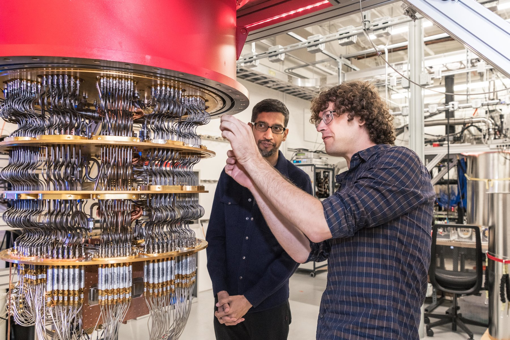

QUANTUM Computer : How it Works and it's future
Quantum computing is a weird concept, yet it has become a reality - at least on a limited and experimental basis. So, what is it, what can it do that traditional computing cannot, and why are quantum computers not yet available as production items?

Quantum computing sounds like the stuff of science fiction, yet, to some extent, it’s a reality.
While it’s not certain when – or if – commercial machines will appear, Google and IBM, plus other tech giants and start-ups, are competing to build the first actually useful quantum device. To understand why the prospect of quantum computing is so compelling, we can start by looking at the limitations of conventional computing, and at how quantum computing avoids these limitations.
Traditional computing
All computers today, whether for industrial, commercial, personal or any other applications, depend on binary logic, where all numbers and states are represented by strings of 1s and 0s. Irrespective of how large or complex a computer is, it depends on transistor gates to implement this binary logic. Each gate is either OPEN for a 1, or CLOSED for 0; no other state is recognized.
As integration technology has steadily improved, the transistors have become smaller, allowing greater processing density, better efficiency, and faster, more powerful machines. However, this miniaturisation process has reduced transistors to sizes of only a few atoms across. With any further reduction in size, the transistors are likely to stop working, as electrons will start to bypass the gates whether they are on or off.
This suggests that we will meet a limit to the amount of processing power available from this technology, and that a different approach is needed for further progress. One possibility being worked on is to use light photons instead of electricity to move information within and beyond integrated circuits. Another is to use quantum computing.
Quantum computing
The quantum concept is valuable because it allows for more than just two states. It relates to interactions between particles at a tiny scale, so small that the rules of physics as we normally experience them no longer apply. However, it is possible that some of the unusual – and counterintuitive - phenomena occurring at this level could be used to overcome the limitations of traditional computing.
In quantum computing, the smallest unit of data is not the bit, but the qubit, based on something like the spin of a magnetic field. Like a bit, this can be set to one of two states - 0 or 1 - but unlike a bit, it is not as simple as just being on or off. Thanks to the quirks of the quantum level, a qubit can also be in any proportion of both states, called a superposition. Sometimes, this is described as being both 0 and 1 simultaneously, although this isn't entirely accurate. Rather, it could be anywhere between completely 0 and completely 1 - but the catch is, as soon as we actually measure a qubit, it collapses into one of the two definite states.
While being difficult or impossible to fully understand, superposition means that the amount of data that can be stored grows exponentially as the number of qubits increases. A group of 20 qubits can hold more than a million values at once. However, quantum computing also involves further concepts, particularly quantum entanglement. This means that, unlike traditional computers that can only process data sequentially, quantum computers can process it all simultaneously.
Google Quantum Computer
It's near to impossible to ignore the world's largest technological company if we are taking about a quantum computer. So, here it is.
Google’s quantum computing chip, dubbed Sycamore, achieved its results using exactly 53 qubits. A 54th one on the chip failed. Sycamore’s aim was to randomly produce strings of 1’s and 0’s, one digit for each qubit, producing 253 bit strings (that is, some 9.700199254740992 quadrillion bit strings). Because of the way the qubits interact with one another, some strings are more likely to emerge than others. Sycamore ran the number generator a million times, then sampled the results to come up with the probability that any given string would appear. The Google team also ran a simpler version of the test on Summit, a supercomputer at Oak Ridge National Laboratory, then extrapolated from those results to verify Sycamore’s output. The new chip performed the task in 200 seconds. The same chore, the researchers estimated, would have taken Summit 10,000 years.
Yet a group of researchers at IBM, which is also working to develop quantum computing, posted a preprint paper on arXiv.org arguing that, under ideal conditions and using extra memory storage, Summit can also do the task. "Because the original meaning of the term ‘quantum supremacy,’ as proposed by [California Institute of Technology theoretical physicist] John Preskill in 2012, was to describe the point where quantum computers can do things that classical computers can’t, this threshold has not been met," the scientists wrote in a post on the IBM Research Blog. Perhaps, then, Google’s achievement might be better labeled "quantum advantage."
Future of Quantum Computer
Quantum computer's can be used in the variety of fields. Such as.
Despite quantum’s still-hypothetical nature and the long road ahead, predictions and investment abound. Google CEO Sundar Pichai likened his company’s recent proof-of-concept advancement to the Wright brothers’ 12-second flight: though very basic and short-lived, it demonstrated what’s possible. And what’s possible, experts say, is impressive indeed.
Thanks for reading.
About the Author :

Akash Chikara
Hii, I'm a CS graduate with quite a knowledge of technology. Outside of work, I like traveling and have an interest in writing.
Find this blog helpful? then share it with your contacts and if you find any error or mistake then do mail us Click here.